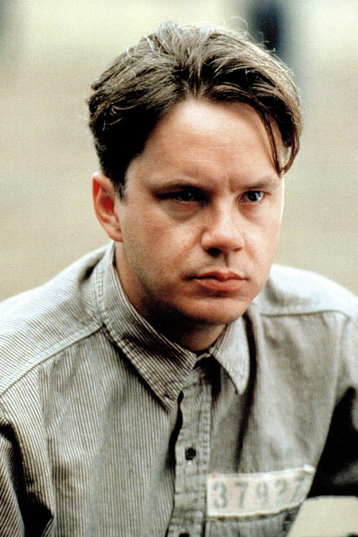
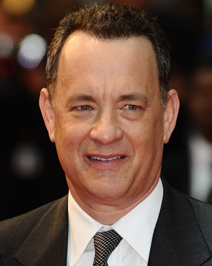

Rebríček Najlepších Filmov
| poradie | názov filmu | rok vydania | hodnotenie |
|---|---|---|---|
| 1 |
Vykoupení z věznice Shawshank
Tim Robbins
|
1994 | 95,3 % |
| 2 |
Forrest Gump
Tom Hanks
|
1994 | 94,5 % |
| 3 |
zelená míla
Tom Hanks
|
1999 | 92,9 % |
| 4 |
sedem
Brad Pitt
|
1995 | 92,5 % |
| 5 |
prelet na kukačím hniezdom
Jack Nicholson
|
1975 | 92,4 % |
| 6 | Schindlerov zoznam | 1993 | 92,3 % |
| 7 | kmotor | 1972 | 91,8 % |
| 8 | dvanásť zozhnevaních mužov | 1957 | 91,4 % |
| 9 | nedotknutelní | 2011 | 91,3 % |
| 10 | pelíšky | 1999 | 91,2 % |
| 11 | terminátor 2 | 1991 | 90,9 % |
| 12 | pulp fiction : historky z podsvetia | 1994 | 90,8 % |
| 13 | kmotor 2 | 1974 | 90,7 % |
| 14 | pán prsteňov : spločenstvo presteňov | 2001 | 90,6 % |
| 15 | pán prsteňov : návrat krála | 2003 | 90,6 % |
| 16 | mlčanie jahňat | 1991 | 90,5 % |
| 17 | vtedy na západe | 1968 | 90,5 % |
| 18 | temný rytier | 2008 | 90,4 % |
| 19 | Gran Torino | 2008 | 90,3 % |
| 20 | Matrix | 1999 | 90,2 % |